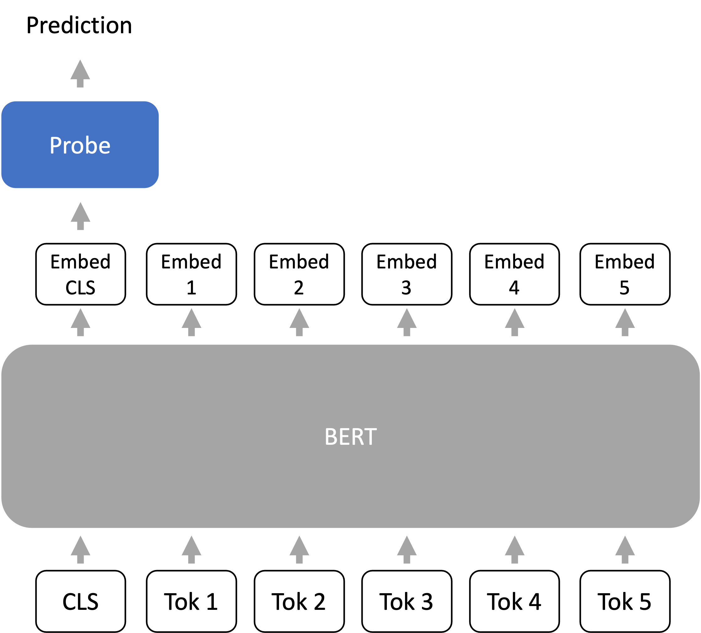
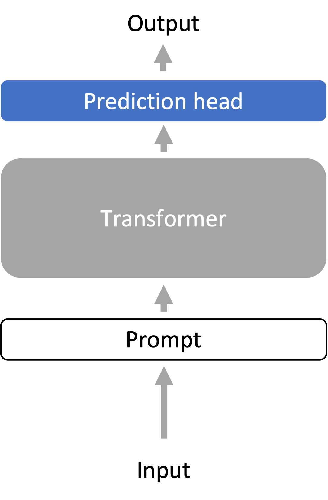
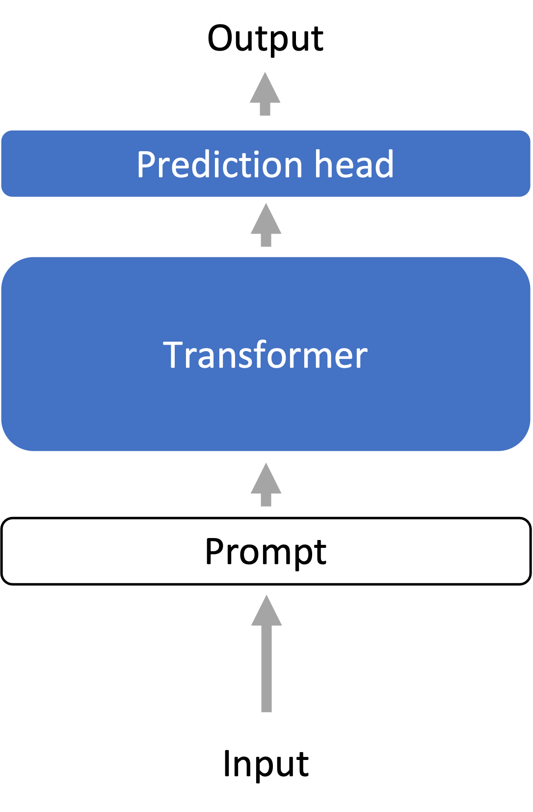
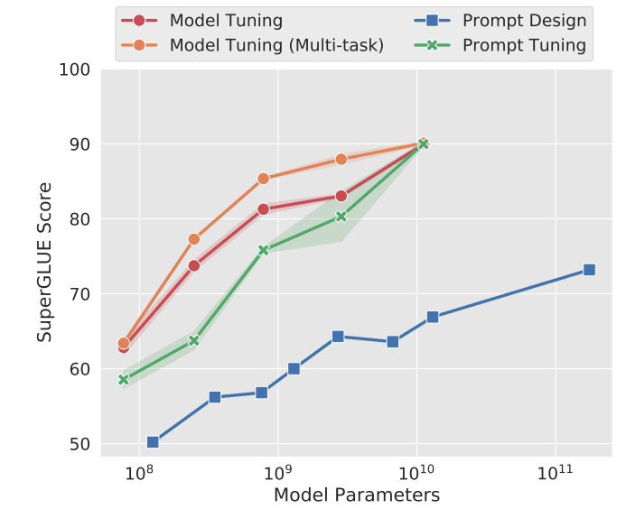
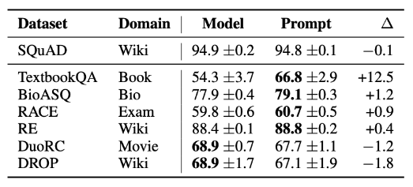
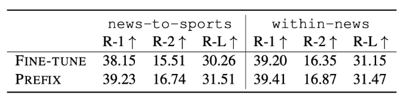
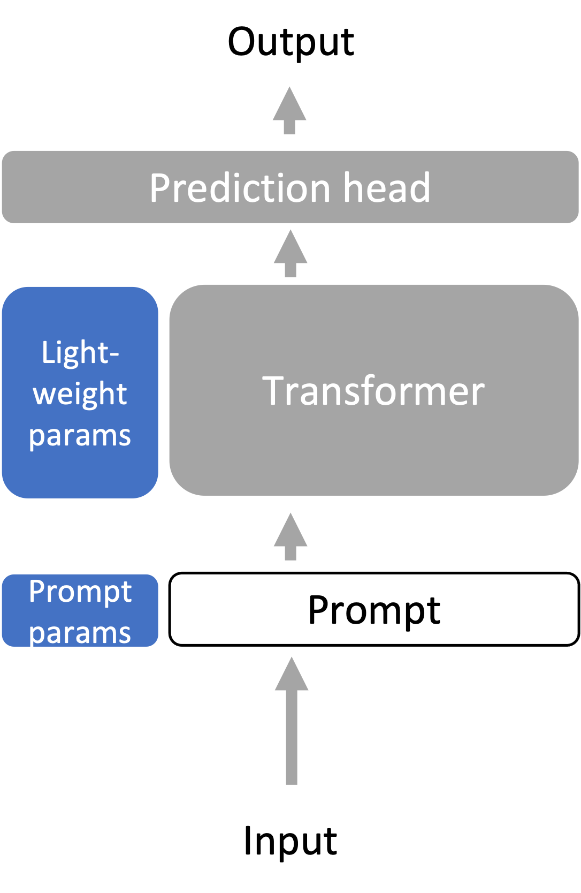

- By only prompting language models (.e.g, in-context learning), we can already do some tasks.
- However, prompting doesn’t work on the full range of downstream tasks (e.g., NLI, QA, converting web tables to text, parsing EHR records, etc.)
- Downstream tasks can differ from LM training data (e.g., the Pile) in format and topic, or require updating new knowledge over time.
- LMs need to be adapted to the downstream task with task-specific data or domain knowledge.
Outline:
Why adapt the language model?
- LMs are trained in a task-agnostic way.
- Downstream tasks can be very different from language modeling on the Pile.
For example, consider the natural language inference (NLI) task (is the hypothesis entailed by the premise?):
- Premise: I have never seen an apple that is not red.
- Hypothesis: I have never seen an apple.
- Correct output: Not entailment (the reverse direction would be entailment)
The format of such a task may not be very natural for the model.
Ways downstream tasks can be different
- Formatting: for example, NLI takes in two sentences and compares them to produce a single binary output. This is different from generating the next token or filling in MASKs. Another example is the presence of MASK tokens in BERT training vs. no MASKs in downstream tasks.
- Topic shift: the downstream task is focused on a new or very specific topic (e.g., medical records)
- Temporal shift: the downstream task requires new knowledge that is unavailable during pre-training because 1) the knowledge is new (e.g., GPT3 was trained before Biden became President), 2) the knowledge for the downstream task is not publicly available.
General adaptation setup
- In the adaptation phase, we train a new model that depends on pre-trained LM parameters \(\theta_{\text{LM}}\) that parameterize the LM \(p\).
- We are given a downstream dataset \((x^{(1)}, y^{(1)}), \dots, (x^{(n)}, y^{(n)})\) sampled from a downstream task distribution \(P_{\text{task}}\).
- We minimize some parameters \(\gamma\) from a family of parameters \(\Gamma\) on a task loss \(\ell_{\text{task}}\) (e.g., cross entropy loss).
- The family of parameters \(\Gamma\) may represent a subset of the existing parameters or introduce new parameters.
- The output of the optimization problem are the adapted parameters \(\gamma_{\text{adapt}}\), which parameterizes the adapted model \(p_{\text{adapt}}\):
Probing
- Probing introduces a new set of parameters \(\Gamma\) that define the family of probes, which are usually linear or shallow feedforward networks.
- Probing is usually for inspecting / understanding representations of the model. For example, if a simple probe on representations can predict part-of-speech (POS) tags, then the representations “store” POS information.
- For adaptation, we train a probe (or prediction head) from the last layer representations of the LM to the output (e.g., class label).
- Mainly applies to encoder-only models (e.g., BERT), but decoder-only models can also be used Liu et al. 2021.

Strategies for fixed-length representations
A Transformer encoder maps a sequence of \(L\) tokens to \(L\) embeddings. Many tasks (e.g., classification) have fixed-length outputs. How do we get 1 embedding vector from a Transformer encoder?
- CLS token Devlin et al. 2018: During both pre-training and fine-tuning, we prepend a special token called CLS to the prompt. We use the embedding vector corresponding to the CLS token as the “sequence-level” embedding.
- Average over tokens: Another common way is to average over the \(L\) tokens. Note: this does not make the model permutation-invariant, since each embedding vector is contextual and position-dependent.

Summary
- Freeze (gray): language model representation encoder
- Optimize (blue, changes per task): probe (prediction head)
- Models: linear or shallow feedforward prediction head
Fine-tuning
- Fine-tuning uses the language model parameters \(\theta_{\text{LM}}\) as initialization for optimization.
- The family of optimized parameters \(\Gamma\) contains all LM parameters and task-specific prediction head parameters.
- The optimizer state from pre-training is discarded.
- Fine-tuning usually uses at least a one order of magnitude smaller learning rate than during pre-training and is much shorter than pre-training.
- Fine-tuning requires storing a large language model specialized for every downstream task, which can be expensive.
- However, fine-tuning optimizes over a larger family of models (i.e., very expressive), and usually has better performance than probing.
Fine-tuning for zero-shot performance
- FLAN and T0 fine-tune the model for better zero-shot performance.
- They unify the prompt format of many downstream tasks and fine-tune the model to perform diverse tasks with this formatting.
- Zero-shot performance on unseen tasks improves over the original language model.
- The model is learning to use the prompt format to do zero-shot tasks.
Fine-tuning for human-aligned language models
- Given instructions in a prompt, LMs should produce outputs that are helpful (useful for the user), honest (don’t mislead the user), and harmless (doesn’t cause physical, psychological, or social harm).
- Language modeling is not inherently aligned with these goals.
- InstructGPT aligns the LM (GPT-3) with 3 steps:
- 1) Collect human-written demonstrations of desired behavior. Do supervised fine-tuning on demonstrations.
- 2) On a set of instructions, sample \(k\) outputs from the LM from step 1 for each instruction. Gather human preferences for which sampled output is most preferred - this data is cheaper to collect than step 1.
- 3) Fine-tune the LM from step 1 with a reinforcement learning objective to maximize the human preference reward.
- A 1.3B InstructGPT model produces outputs that are preferred to 175B GPT-3 85% of the time, and 71% when using few-shot prompts with GPT-3.
- On closed-domain QA/summarization, InstructGPT hallucinates information 21% of the time vs 41% in GPT-3
- InstructGPT generates 25% fewer toxic outputs than GPT-3 when prompted to be respectful
- InstructGPT doesn’t improve bias: not much benefit on Winogender and CrowSPairs

Summary
- Freeze (gray): nothing
- Optimize (blue, changes per task): all parameters of the language model, plus a new prediction head
Lightweight Fine-tuning
- Lightweight fine-tuning aims to have the expressivity of full fine-tuning while not requiring us to store the full language model for every task.
- Many lightweight fine-tuning variants - amongst them we discuss prompt tuning, prefix tuning, and adapter tuning.
Prompt tuning [Lester et al., 2021]
- Developed for text classification tasks on the T5 model (an encoder-decoder)
- Motivated by prompt design/engineering in inference-based adaptation, prompt tuning prepends \(k\) learnable, continuous token embeddings (this defines \(\Gamma\))to the input (so the input is now length \(L’=L+k\)) and trains this on the labeled task data. The entire pre-trained language model is frozen.
- Scaling improves prompt tuning: with larger frozen language models, prompt tuning’s performance becomes more competitive with full fine-tuning (“model tuning”).
- Learned prompt embedding initialization strategies:
- Embeddings of random vocab words
- Embeddings of class label words
- Random init: doesn’t work well

Prefix tuning [Li and Liang, 2021]
- Developed for language generation tasks on the BART and GPT-2 models
- For \(k\) positions prepended to the input, concatenate additional learnable weights for keys and values at every attention layer. Different to prompt tuning (only learnable input vectors).
- To define prefix tuning, we use a generalized definition of an attention operation, which takes in 3 arguments: the key \(K \in \R^{d\times L’}\), value \(V \in \R^{d \times L’}\), and query \(Q \in \R^{d \times L}\):
where for self-attention, we set \(L'=L\) and define \(K = W_{\text{key}}\x\), \(V = W_{\text{value}}\x\) and \(Q = W_{\text{query}}\x\), where \(W_{\text{key}}, W_{ \text{value}}, W_{\text{query}}\) are learned weight matrices.
- For attention head \(i\), prefix tuning computes attention with a larger \(L’ = L + k\) by concatenating learnable weights \(P_{\text{key}}^{(i)} , P_{\text{value}}^{(i)} \in \R^{d \times k}\) to the key and value He et al. 2022:
where \(Q = W_{\text{query}}\x\) as in regular self-attention.
Trainable parameters at all layers helps
- Prompt tuning v2 is the all-layer version of prompt tuning.
- All layer parameters seem to help for text classification and generation.
Adapter tuning [Houlsby et al. 2019]
- Add a new learned “bottleneck” layer (adapters) between each (frozen) Transformer layer
- Adapters are usually 2-layer residual networks that operate on each element \(x \in \R^d\) of the sequence individually:
where \(W_{\text{down}}\in \R^{r \times d}\) and \(W_{\text{up}}\in \R^{d \times r}\) are learned weights that project \(x\) down to a bottleneck dimension \(r\) and back up to dimension \(d\), and \(\sigma\) is a non-linear activation function. The result \(\text{Adapter}(x)\) is a vector in \(\R^d\) with the same dimensionality as \(x\).
- Note: How expressive is lightweight fine-tuning? Complex since expressivity is tied to the particular pre-trained LM - if the pre-trained LM has weights that are 0, then prompt/prefix tuning would not do anything.
Parallelization over prefixes/prompts
- Suppose we want to deploy a personalized model for \(N\) users.
- With prefix tuning, we can store \(N\) prefixes, one for each user
- Run personalized model for each user in parallel across a minibatch by prepending the corresponding user-specific prefix to each input in the minibatch.
Robustness of lightweight fine-tuning
- Lightweight fine-tuning methods tend to improve out-of-distribution (OOD) performance compared to full fine-tuning, for example on text from different topics or domains.
- Prompt tuning improves OOD accuracy: Table of F1 results from prompt tuning vs full fine-tuning (Model tuning) trained on SQuAD and tested on out-of-domain MRQA 2019 tasks

- Prefix tuning improves OOD accuracy: on the XSUM summarization task, where models are fine-tuned on news articles and tested on sports (news-to-sports) or trained on {world, UK, business} articles and tested on {health, technology} articles (within-news).
- For XSUM, the metric used is ROUGE-L, an automatic evaluation metric for summarization based on matching length \(L\) subsequences with a reference summarization. Note that when the test dataset is not out-of-distribution, prefix tuning’s accuracy is usually slightly worse than full fine-tuning.


Summary
- Freeze (gray): whole/most of language model
- Optimize (blue, changes per task): small number of additional parameters (<1% of the parameters)
- Methods: prompt tuning, prefix tuning, adapter tuning, and others (LoRA, BitFit, …)
Overall summary
- We need to adapt large language models to the diverse array of downstream tasks, which may be very different from language modeling.
- Probing trains a task-specific prediction head on top of a frozen language model, treating the language model as a good representation extractor. Freezing the language model tends to limit the expressivity of the method.
- Fine-tuning treats the large language model parameters as initialization for further training all of the parameters on a downstream task, which is much more expressive than probing but more expensive since we have to save the whole model for each downstream task.
- Lightweight fine-tuning strikes a balance between fine-tuning and probing by optimizing only a few parameters (<%1 of the model), but it optimizes high-leverage parts of the model so that it is still very expressive.
Further reading
- Multitask Prompted Training Enables Zero-Shot Task Generalization. Victor Sanh, Albert Webson, Colin Raffel, Stephen H. Bach, Lintang A. Sutawika, Zaid Alyafeai, Antoine Chaffin, Arnaud Stiegler, Teven Le Scao, Arun Raja, Manan Dey, M SAIFUL BARI, Canwen Xu, Urmish Thakker, Shanya Sharma Sharma, Eliza Szczechla, Taewoon Kim, Gunjan Chhablani, Nihal V. Nayak, Debajyoti Datta, Jonathan Chang, Mike Tian-Jian Jiang, Han Wang, Matteo Manica, Sheng Shen, Zheng Xin Yong, Harshit Pandey, Rachel Bawden, Thomas Wang, Trishala Neeraj, Jos Rozen, Abheesht Sharma, Andrea Santilli, Thibault Févry, Jason Alan Fries, Ryan Teehan, Stella Rose Biderman, Leo Gao, T. Bers, Thomas Wolf, Alexander M. Rush. 2021. Introduces T0 from BigScience.
Finetuned Language Models Are Zero-Shot Learners. Jason Wei, Maarten Bosma, Vincent Zhao, Kelvin Guu, Adams Wei Yu, Brian Lester, Nan Du, Andrew M. Dai, Quoc V. Le. 2021. Introduces FLAN from Google.
- Prefix-Tuning: Optimizing Continuous Prompts for Generation. Xiang Lisa Li, Percy Liang. ACL/IJCNLP 2021.
- Training language models to follow instructions with human feedback.Long Ouyang, Jeff Wu Xu Jiang, Diogo Almeida, Carroll L. Wainwright, Pamela Mishkin, Chong Zhang, Sandhini Agarwal, Katarina Slama, Alex Ray, John Schulman, Jacob Hilton, Fraser Kelton, Luke Miller, Maddie Simens, Amanda Askell†, Peter Welinder, Paul Christiano, Jan Leike, Ryan Lowe. InstructGPT paper.
- The Power of Scale for Parameter-Efficient Prompt Tuning, Brian Lester, Rami Al-Rfou, Noah Constant. EMNLP 2021. Introduces prompt tuning.
- Towards a Unified View of Parameter-Efficient Transfer Learning, Junxian He, Chunting Zhou, Xuezhe Ma, Taylor Berg-Kirkpatrick, Graham Neubig. ICLR 2022.
- P-Tuning v2: Prompt Tuning Can Be Comparable to Fine-tuning Universally Across Scales and Tasks, Xiao Liu, Kaixuan Ji, Yicheng Fu, Zhengxiao Du, Zhilin Yang, Jie Tang. arXiv 2021.